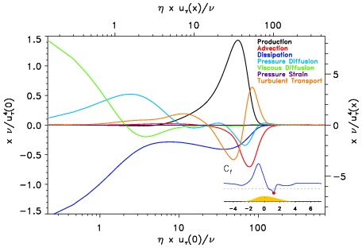
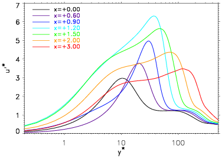
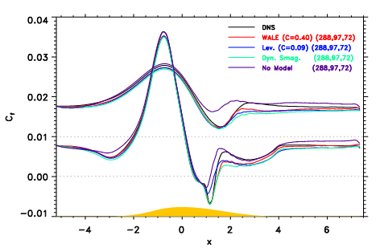
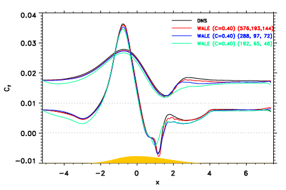

The ER2 team of Laboratoire de Mécanique de Lille is strongly involved in the study of turbulent boundary layers. In parallel to high level experimental tools, M. Marquillie and J.-P. Laval developed a numerical code devoted for DNS and LES of turbulent boundary layer flows over a smooth surface using an algorithm adapted for this type of geometries.
The algorithm used for solving the incompressible Navier-Stokes system is similar to the one described in Marquillie et al (2008). To take into account the complex geometry of the physical domain, the partial differential operators are transformed using the mapping which has the property of following a profile at the lower wall with a flat surface at the upper wall. Applying this mapping to the momentum and divergence equations, the modified system in the computational coordinates has to be solved in the transformed Cartesian geometry (see fig. below).
 Mesh in physical domain
Mesh in physical domain
 Mesh in computational domain
Mesh in computational domain
The three-dimensional Navier-Stokes equations are discretized using fourth and eight order centered finite differences in the streamwise direction. A pseudo-spectral Chebyshev-collocation method is used in the wall normal direction. The spanwise direction is assumed periodic and is discretized using a spectral Fourier expansion, the nonlinear coupling terms being computed using a conventional de-aliasing technique (3/2-rule). The resulting 2D-Poisson equations are solved in parallel using MPI library. Implicit second-order backward Euler differencing is used for time integration, the Cartesian part of the diffusion term is taken implicitly whereas the nonlinear and metric terms (due to the mapping are evaluated using an explicit second-order Adams-Bashforth scheme. In order to ensure a divergence-free velocity field, a fractional-step method has been adapted to the present formulation of the Navier-Stokes system with coordinate transformation.
The use of an original algorithm with a mapping of coordinate allowing a direct resolution leads to a very efficient integration as compared to curvilinear coordinates. The code was optimized for both vectorial (NEC SX-8) and scalar (IBM Power6 & BlueGene) supercomputers. Several LES models have been implemented: the classical Smagorinsky model, the dynamic Smagorindky model and the WALE model.
DNS of converging-diverging channel flow
The code was used during the FP6 WALLTURB project to perform direct numerical simulations of converging-diverging channel flows at two different Reynolds number (Reτ= 600 and Reτ= 400 at inlet). The simulation with the highest Reynolds number was done with the help of two successive DEISA projects (2006-2007 and 2007-2008). Up to 160000 Cpu hours on NEC SX-8 were used in total for this simulation.
Databases
The 3D velocity and pressure fields as well as extensive statistics of the two DNS of converging-diverging channels are gathered in the LML database . The statistics and coherent structures of the DNS at the lowest Reynolds number has been analyzed in detail in Marquillie et al (2008). For the two DNS, all the terms of the Reynolds Stresses equations are available in a system of coordinate parallel to the each walls. An example of turbulent kinetic energy balance is given at the lower wall in the beginning of the adverse pressure gradient region.
|  |  | |
| Turbulent kinetic energy balance for DNS at Reτ= 600 | Streamwise evolution of the streamwise turbulent intensity at lower wall |
Coherent structures
The aim of our study on turbulent boundary layer with adverse pressure gradient (APG) is to characterize the different turbulent coherent structures and to describe their organization and their interactions. Our main interest is to understand how intense vortices, responsible of the well known second energy peak in APG flows, are generated and what are their scaling. An instability analysis performed recently by Marquillie et al (2011) and Laval et al (2012) is able to explain the occurrence and the position of these intense vortices.
 |
| Visualisation of low speed streaks (red) and intense vortices (blue) at the lower wall of the converging-diverging channel flow (click on image to enlarge) |
 |
| Visualisation of intense vortices in a DNS of converging-diverging channel flow (click on image to play movie) |
LES of converging-diverging channel flow
Large Eddy Simulation of wall bounded flows is still a strong research topic as it requires specific treatment in the near wall region. Either the near wall region need to be fully resolved and the simulation are too expensive for high enough Reynolds numbers, or one has to introduce near wall models which are not natural for unsteady simulations. Designing an accurate LES of wall bounded flows with averse pressure gradient is even more challenging. Our DNS database of a converging-diverging channel flow was designed to suggest an easy and well documented test case to validate LES and RANS models. The sub-grid scale models implemented in our numerical code were tested on the converging-diverging channel flows at two Reynolds numbers. The results are presented in Laval et al (2010) and Kuban et al (2012)|  |  | |
| Friction coefficients for 3 different models on the same grid (the upper wall curves are shifted up) | Friction coefficients for the WALE model on 3 different grids (the upper wall curves are shifted up) |
References
- J.-P. Laval, M. Marquillie and U. Ehrenstein, 2012,On the relation between kinetic energy production in adverse-pressure gradient wall turbulence and streak instability, J. Turbulence. , 13 (21), 1-19
- L. Kuban, J.-P. Laval, W. Elsnern, Tyliszcak, A. and M. Marquillie, 2012, LES modeling of converging-diverging turbulent channel flow, J. Turbulence. , 13 (11), 1-19
- M. Marquillie, U. Ehrenstein and J.-P. Laval, 2011, Instability of streaks in wall turbulence with adverse pressure gradient, J. Fluid Mech. , 681, 205-240
- M. Marquillie, J.-P. Laval and R. Dolganov, 2008, Direct Numerical Simulation of separated channel flows with a smooth profile. J. Turbulence , 9, 1-23.
- J.-P. Laval and M. Marquillie. Direct Numerical Simulations of converging-diverging channel flow. Progress in wall turbulence : understanding and modelling, Villeneuve d'Ascq, France, April 21-23, Springer ERCOFTAC Series, Edited by M. Stanislas, J. Jimenez and I. Marusic, 2010.
- J.-P. Laval, W. Elsner, L. Kuban and M. Marquillie. LES modeling of Converging Diverging Turbulent Channel Flow. Progress in wall turbulence : understanding and modelling, Villeneuve d'Ascq, France, April 21-23, Springer ERCOFTAC Series, Edited by M. Stanislas, J. Jimenez and I. Marusic, 2010.
- M. Marquillie, J.-P. Laval and R. Dolganov, DNS of channel flows with pressure gradient, Advances in Turbulence XI, 11th Euromech European Turbulence Conference, June 25-28, 2007, Porto, Portugal, pp 91-93.
- J.-P. Laval, DNS LES simulation and supercomputing, High-performance computing of industrial flows. Lecture Series 2009-05, May 5-7, 2009, Edited by J.M. Buchlin, P. Rambaud, Ph. Planquart, von Karman Institute for Fluid Dynamics.
- J.-P. Laval, M. Marquillie and U. Ehrenstein, Low speed streaks instability of turbulent boundary layer flows with adverse pressure gradient, 19-22 September 2010, Bertinoro, Italy.